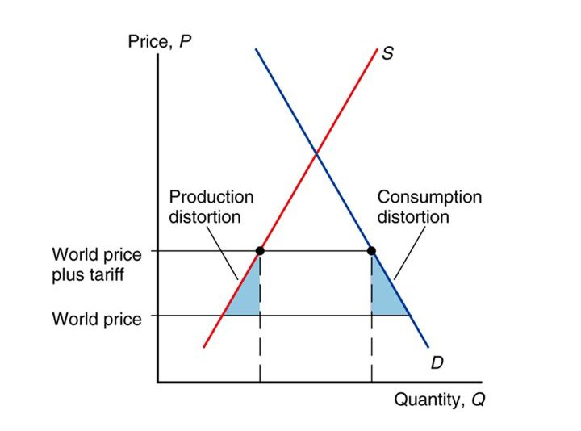

6 The Political Economy of Trade Policy
Previous lectures have answered the question, “Why do nations trade?” by describing the causes and effects of international trade and the functioning of a trading world economy. This lecture examines the policies that governments adopt toward international trade, policies that involve a number of different actions. These actions include taxes, subsidies, legal limits on the value or volume of particular imports and other measures.
The chapter thus provides a framework for understanding the effects of the most important instruments of trade policy.
6.1 Basic Tariff Analysis
A tariff is a tax levied when a good is imported. There are various types of tariff.
Specific tariff are levied as a fixed charge for each unit of goods imported (for example, $3 per barrel of oil).
Ad valorem tariffs are taxes that are levied as a fraction of the value of the imported goods (for example, a 25 percent U.S. tariff on imported trucks).
Tariffs are the oldest form of trade policy and have traditionally been used as a source of government income. Their true purpose is to provide revenue and to protect particular domestic sectors.
The importance of tariffs has declined in modern times because modern governments usually prefer to protect domestic industries through a variety of non-tariff barriers, such as:
Import quotas (limitations on the quantity of imports)
Export restraints (limitations on the quantity of exports—usually imposed by the exporting country at the importing country’s request).
Nonetheless, an understanding of the effects of a tariff remains vital for understanding other trade policies.
6.2 Political economy and trade policy
In 2008, several developing countries were forced to reduce crop prices domestically. To increase domestic supply for food products, countries like Thailand, Russia, and Ukraine chose to restrict food exports. Such a trade policy was not only politically improper, as it serves only one country’s interest, but also economically counter-productive. For example, farmers in Ukraine dumped around €90 million worth of grain as they harvested more than they could supply domestically, due to the export restrictions, while the world supply was insufficient.
Banning exports may have reduced domestic prices, but importers had to look elsewhere for sources of supply, creating a rise in global crop prices. Thus, such policies produce more costs than benefits as higher the price, the greater the incentive to hoard, which create shifts in prices. Clearly, government policies reflect intentions that go beyond simple measures of cost and benefit.
6.2.1 Free Trade and Efficiency
The efficiency case for free trade is simply the reverse of the cost-benefit analysis of a tariff. Figure 6a shows the basic point once again for the case of a small country that cannot influence foreign export prices. A tariff causes a net loss to the economy measured by the area of the two triangles; it does so by distorting the economic incentives of both producers and consumers. Conversely, a move to free trade eliminates these distortions and increases national welfare.

In the modern world, for reasons we will explain later in this chapter, tariff rates are generally low and import quotas relatively rare. As a result, estimates of the total costs of distortions due to tariffs and import quotas tend to be modest in size. Table 6a shows an estimate of the gains from a move to worldwide free trade, measured as a percentage of GDP. For the world as a whole, according to these estimates, protection costs less than 1 percent of GDP. The gains from free trade are somewhat smaller for advanced economies such as the United States and Europe and somewhat larger for poorer “developing countries.”
| Country or region | Growth of GDP in percentage |
|---|---|
| United States | 0.57 |
| European Union | 0.61 |
| Japan | 0.85 |
| Developing Countries | 1.4 |
| World | 0.93 |
Because tariff rates are already low for most of the countries, the estimated benefit to free trade is not significantly high for many nations and regions of the world.
| Policy | Tariff | Export Subsidy | Import Quota | Voluntary Export Restraint |
|---|---|---|---|---|
| Producer benefit | Increases | Increases | Increases | Increases |
| Consumer benefit | Falls | Falls | Falls | Falls |
| Government revenue | Increases | Falls | No change | No change |
| Overall national welfare | Ambiguous (falls for small country) | Falls | Ambiguous (falls for small country) | Falls |
All four trade policies benefit producers and hurt consumers. The effects of the policies on economic welfare are at best ambiguous; two of the policies definitely hurt the nation as a whole, while tariffs and import quotas are potentially beneficial only for large countries that can drive down world prices.
6.3 Some other Instruments of Trade Policy
Tariffs are the simplest trade policies, but in the modern world, most government intervention in international trade takes other forms, such as:
Export subsidies
Import quotas
Voluntary export restraints
Local content requirements
Fortunately, once we have understood tariffs, it is not too difficult to understand these other trade instruments.
6.3.1 Export Subsidies
An export subsidy is a payment to a firm or individual that ships a good abroad. Like a tariff, an export subsidy can be either specific (a fixed sum per unit) or ad valorem (a proportion of the value exported). When the government offers an export subsidy, shippers will export the good up to the point at which the domestic price exceeds the foreign price by the amount of the subsidy.
6.3.2 Import Quotas
An import quota is a direct restriction on the quantity of some good that may be imported. The restriction is usually enforced by issuing licenses to some group of individuals or firms. For example, the United States has a quota on imports of foreign cheese. The only firms allowed to import cheese are certain trading companies, each of which is allocated the right to import a maximum number of pounds of cheese each year; the size of each firm’s quota is based on the amount of cheese it imported in the past.
6.3.3 Voluntary Export Restraints
A variant on the import quota is the voluntary export restraint (VER), also known as a voluntary restraint agreement (VRA). A VER is a quota on trade imposed from the exporting country’s side instead of the importer’s. The most famous example is the limitation on auto exports to the United States enforced by Japan after 1981.
6.3.4 Local Content Requirements
A local content requirement is a regulation that requires some specified fraction of a final good to be produced domestically. In some cases, this fraction is specified in physical units. In other cases, the requirement is stated in value terms by requiring that some minimum share of the price of a good represent domestic value added. Local content laws have been widely used by developing countries trying to shift their manufacturing base from assembly back into intermediate goods.
6.3.5 Quiz 6
Why some developing countries impose high import tariff on car? Explain the reasons with sufficient justification and examples.